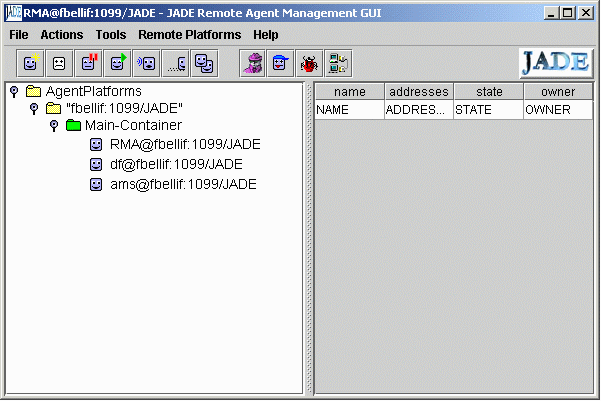
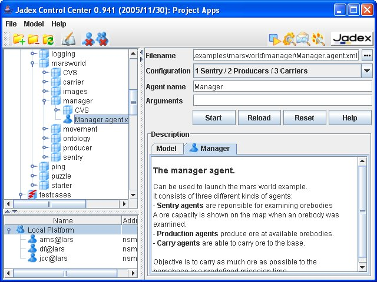

en ru
JADE (Java Agent DEvelopment Framework) is a software Framework fully implemented in Java language. It simplifies the implementation of multi-agent systems through a middle-ware that complies with the FIPA specifications and through a set of graphical tools that supports the debugging and deployment phases. The agent platform can be distributed across machines (which not even need to share the same OS) and the configuration can be controlled via a remote GUI. The configuration can be even changed at run-time by moving agents from one machine to another one, as and when required. JADE is completely implemented in Java language and the minimal system requirement is the version 1.4 of JAVA (the run time environment or the JDK).
The synergy between the JADE platform and the LEAP libraries allows to obtain a FIPA-compliant agent platform with reduced footprint and compatibility with mobile Java environments down to J2ME-CLDC MIDP 1.0. The LEAP libraries have been developed with the collaboration of the LEAP project and can be downloaded as an add-on of JADE from this same Web site.
JADE is free software and is distributed by Telecom Italia, the copyright holder, in open source software under the terms of the LGPL ( Lesser General Public License Version 2). Since May 2003, a JADE Board has been created that supervisions the management of the JADE Project. Currently the JADE Board lists 5members: Telecom Italia , Motorola, Whitestein Technologies AG., Profactor GmbH, and France Telecom R&D.

http://sourceforge.net/projects/jadeframework/
JADE is a framework used for fast Web application programming. JADE is made up of PHP libraries and objects that allow corporations and government and paragovernment entities to quickly develop Web applications.

Jadex is a Belief Desire Intention (BDI) reasoning engine that allows for programming intelligent software agents in XML and Java. The resoning engine is very flexible and can be used on-top of different middleware infrastructures such as JADE.
Intelligent agents are a modelling paradigm, based on the notion of agents with mental states. The Jadex reasoning engine follows the Belief Desire Intention (BDI) model and facilitates easy intelligent agent construction with sound software engineering foundations. It allows for programming intelligent software agents in XML and Java and can be deployed on different kinds of middleware such as JADE.
To enable the creation of intelligent agents several different constituent parts have to be assembled. It is necessary to provide an agent architecture that at least takes into account agent-internal, agent society and artificial intelligence (AI) concepts. It is a property of agent research that interesting research results in various isolated areas exist, but that these results are not integrated into superordinated architectures. Therefore until now no standards can address the construction of intelligent agents in all facets.
The Jadex research project is conducted by the Distributed Systems and Information Systems Group at the University of Hamburg. The developed software framework is available under GNUs LGPL license, and is continuously evolving. The project's file releases are kindly hosted by the SourceForge.net portal. The projects web presence is based on a wiki and thus allows Jadex users to contribute in various ways. The reasoning engine has been put into practice in the context of several research, teaching, and industrial application scenarios some of which are described here in the web.
Jade.NET
© AIKernel 2011
18.05.2011 - 18.05.2011